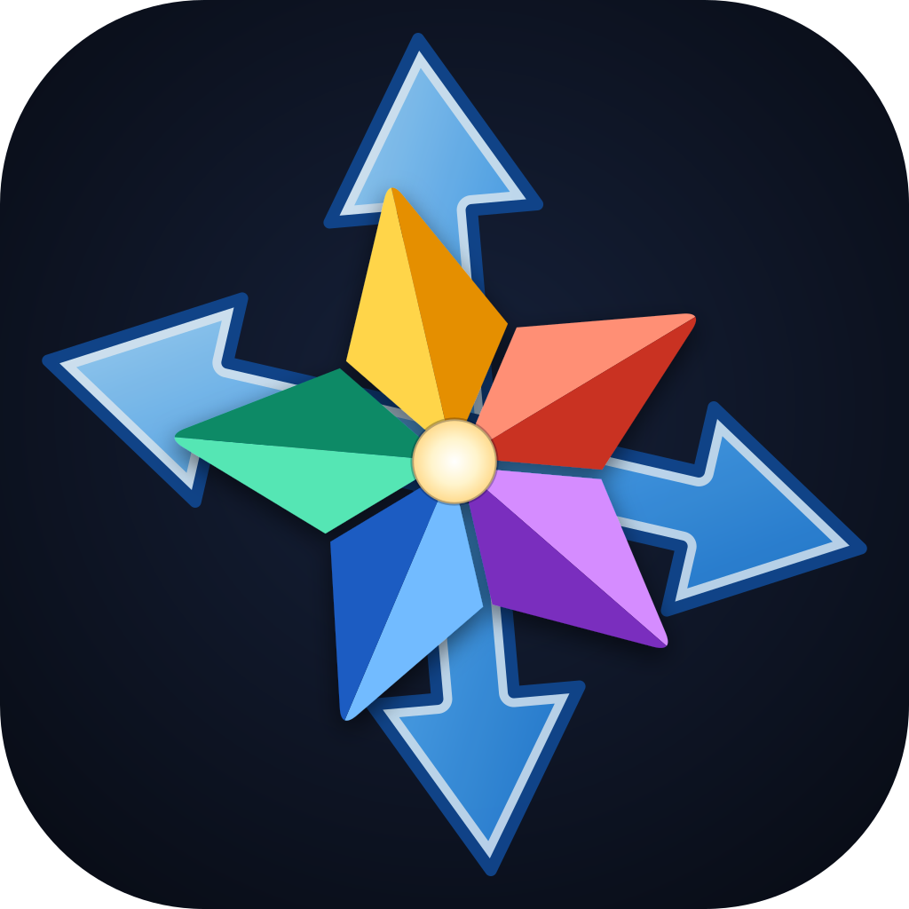

Exchange server
What this is for
Sign in to the exchange server that the host of a server gave you access to, and see the live broadcasts of your other devices. This app only signs in: accounts are created in Fast Media Sorter. You sign in once and stay signed in until the host changes the conditions. Via Google Drive, Exchange server and Live broadcasts each fold under their own heading and stay the way you leave them.
In this order
- Get a connection string or a QR code from the host of the server. Press Paste connection string 6, Open file.. 7 or Scan QR 8. The form fills in the server and, when the string carries it, your login.
- Check the server name and the login. The address of the server 13 is shown in a small line below them, so you can see where the password goes.
- Type your password 14 and press Sign in 15. On the first connection the app shows the certificate of the server and asks you to trust it; it then remembers it.
- Once you are signed in, the account card 19 and the list of live broadcasts 28 appear. Tap a broadcast to play it, or keep it as a channel.
- If the app cannot connect, press Why won't it connect? 17: it checks the connection step by step and says what to do.
The elements
The top bar
1HelpOpens this page.
Back returns to the exchange server screen.
- Shortcut
- F1
Via Google Drive
2Via Google DriveFinds the broadcasts of your devices without a server.
Your other devices announce their broadcasts in a hidden app folder of your own Google account, and this card lists them. Only the announcements go through Google Drive, never the stream itself. It works with or without an exchange account.
3Sign in with GoogleConnects your Google account.
Google asks you once to allow access to the hidden app folder only. The app sees nothing else in your Google Drive.
- Undo
- Sign out of Google Drive.
4Sign out of Google DriveDisconnects your Google account.
The list of broadcasts announced through Google Drive disappears from this screen. The exchange account below stays signed in.
- Undo
- Sign in with Google again.
5How it works via Google DriveOpens the guide about Google Drive in your browser.
A web page that explains announcing broadcasts through Google Drive. It needs a network.
Signing in
6Paste connection stringFills the form from a connection string.
Takes the connection string from the clipboard. The server, its name and, when the string carries it, the login are filled in. A string that is not a connection string is refused with a message, and nothing changes. If the clipboard is empty, the app says so.
7Open file..Fills the form from a connection file.
Choose the .fmsexch file that the host sent you. It fills the form in the same way as a pasted string.
8Scan QRFills the form from a QR code.
Opens the camera. Point it at the QR code that the host shows; the form fills in as soon as the code is read.
9Server addressThe server, typed by hand.
These fields appear only when no connection string was used. Type the name or the address that the host gave you. A connection string fills them for you.
10PortThe port of the server, typed by hand.
Leave 443 unless the host gave you another number. A connection string fills it for you.
11LoginYour login on this server.
Filled in from the connection string when it carries one. Otherwise type the login that the host gave you.
12Use pairing code instead of passwordSigns in with a one-time code instead of a password.
Tick it when the host gave you a pairing code. The password field then asks for the code. Each code works once.
- Undo
- Untick it to type a password.
13Server addressWhere the password goes.
A small line under the server name and the login that shows the address of the server. It is there so that you never type your password into the wrong server; you do not need to do anything with it.
14PasswordYour password, or the pairing code.
The password is sent to the server once and is never stored on the phone. The field is cleared after you press Sign in. A wrong password is shown once; the app never retries it by itself.
15Sign inSigns this phone in.
On the first connection the app shows the certificate of the server and asks you to trust it, then remembers it. After that the phone stays signed in until the host changes the conditions. A connection string that is an invitation cannot create an account here: open it in Fast Media Sorter first, then sign in here.
- Shortcut
- Enter
16How accounts and sign-in workOpens the guide about accounts in your browser.
A web page that explains accounts, invitations and signing in. The same button is on the account card. It needs a network.
17Why won't it connect?Explains why the connection fails.
Appears under a message about a failed connection. It checks the connection step by step and says, in plain words, what to do: wake the device that runs the server, join the main Wi-Fi network, check the login, and so on.
Your account
18Play broadcasts sent from my devices without askingPlays a broadcast your devices send without asking.
When one of your own devices sends a broadcast to this phone, it starts at once. Untick it to be asked first.
- Undo
- Untick it.
19Account cardThe server, your login and the state of this phone.
Shows the server, your login, whether this phone is connected or is a guest, and the certificate fingerprint the phone trusts. When the host changes the password of the account, the card says so and asks you to sign in again; your channels and the server are kept.
20Connect watchConnects your watch to this account.
The watch signs in through this phone. The line below the button tells how the pairing is going.
21Sign in againSigns in again with your password.
Use it when the card says you were signed out, for example after the password of the account was changed. It opens the sign-in form with the server and the login already filled in; type the password. The certificate the phone trusts is kept.
22Replace PINReplaces the certificate fingerprint this phone trusts.
Use it only when the host tells you the server has a new certificate and gives you its fingerprint. A certificate renewed with the same key needs nothing from you.
- Undo
- Replace it again with the old fingerprint.
23Change serverMoves this phone to another exchange server.
The phone works with one exchange server. Changing it removes the account on this phone and opens the sign-in form for the new server. The app asks first.
24Sign out on this deviceSigns this phone out of the account.
The phone forgets its sign-in and the server forgets this phone. The channels you kept stay, and the account on the server is kept for your other devices. A watch connected through this phone is signed out too. The app asks first.
- Undo
- Sign in again with a connection string and your password.
25Change passwordChanges the password of your account.
Type the current password, the new one and the new one again. This phone stays signed in; your other devices must sign in again with the new password. A forgotten password cannot be changed here: ask the host to reset it. The password fields are cleared when the window closes.
26How to delete an accountExplains how to delete an account.
Accounts are deleted on the server, in Fast Media Sorter, not in this app. The button opens the guide in your browser; it needs a network.
27Broadcasts on this serverEvery broadcast of this phone is announced on this server.
From the moment a broadcast starts, your other devices see it in their list, with no switch to turn on, and Broadcast Control names this server. The line also says what the server's operator sees while the relay through the server runs. To keep broadcasts on your own network only, remove the server. A guest account does not have this line: a guest sees only what was shared with them and announces nothing.
28Learn moreExplains going on air through the server.
Opens the guide about starting a broadcast and what the server sees, in your browser; it needs a network.
29What the server seesWhat the exchange server knows and what it cannot open.
The exchange server connects your devices, so it knows the names of your account, devices, folders and broadcasts, sees which devices are online, and how much is sent and when. It cannot open what goes through it: folders and their files, broadcasts and the clipboard are encrypted on your device and opened only on your other devices or by the people you gave access to. To look inside, whoever runs the server would have to add a device of their own to your account, and it would appear in your list of devices.
Live broadcasts
30Live broadcastsThe broadcasts your devices are running now.
Grouped by device. Tap a broadcast to play it, or Keep as channel to add it to your list. When nobody is broadcasting, the list says so. Folders shared by other devices are not played here. A folder locked with a PIN is listed with its device and the line saying this program cannot open it. A broadcast whose protection cannot be opened on this phone says why and is not played.
31Keep everything listed nowKeeps every broadcast in the list as a channel.
Adds all the broadcasts listed now to your channel list in one go. A broadcast with a password asks for it.
32How to receive a broadcastOpens the guide about receiving a broadcast.
A web page that explains how to receive a broadcast from this list. It needs a network.